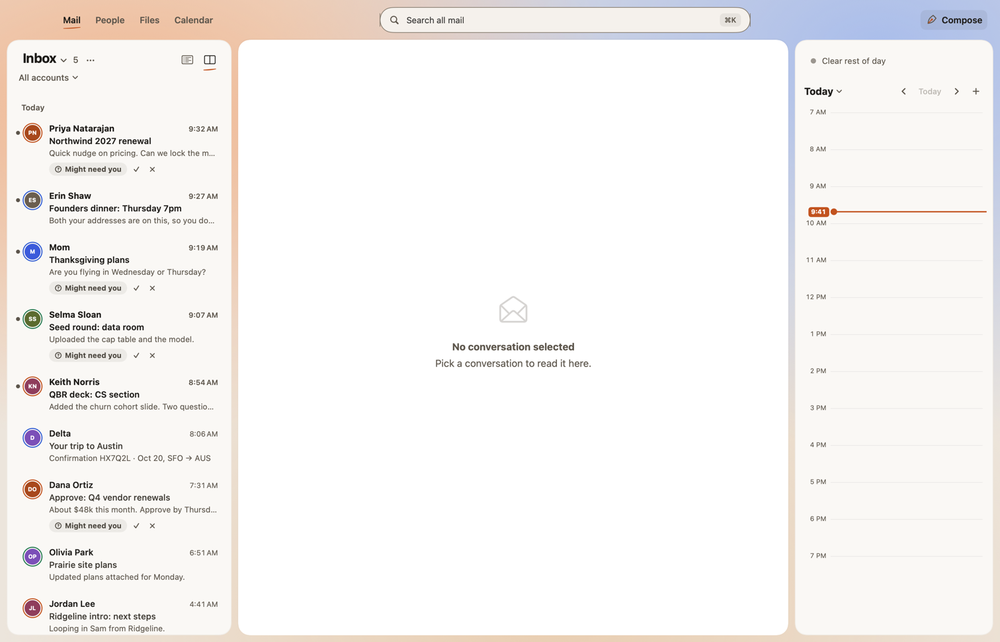
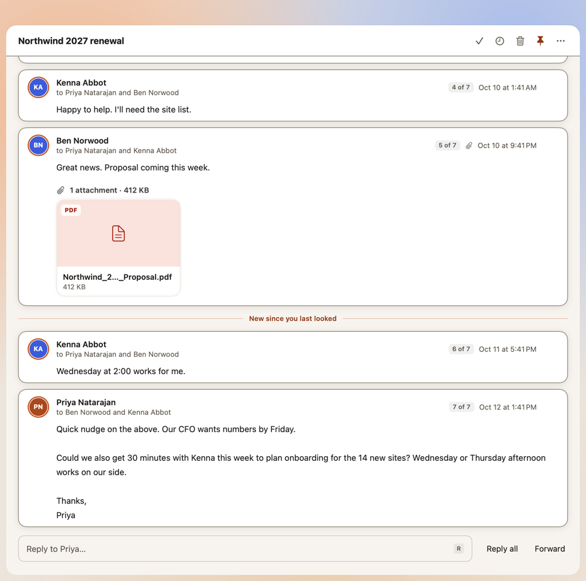
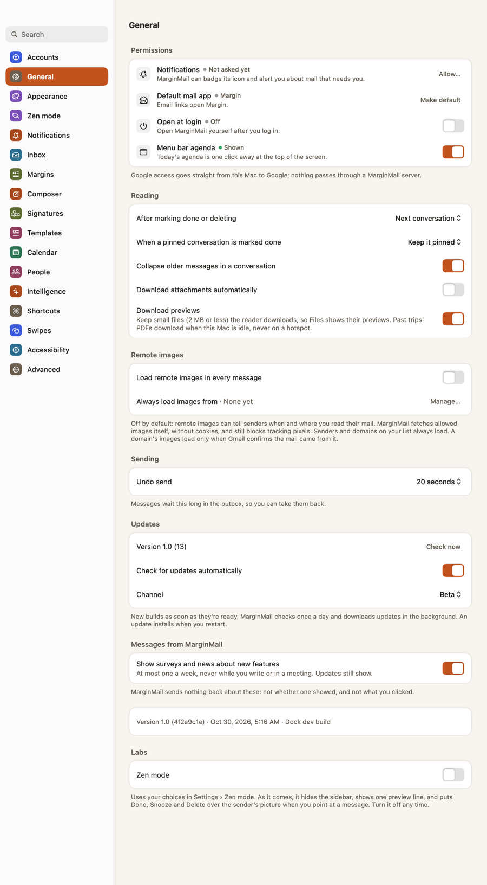

Zen mode is how I use MarginMail every day now. Turn it on and tell me what feels off.
Release notes
MarginMail 1.0 (9)
Thu, Nov 19 · Beta
You can now try Zen mode, a calmer, simpler MarginMail. We're still shaping it, but you can preview it in Settings › General › Labs. We've also been squashing bugs to make the overall experience simpler and better. We hope you're enjoying MarginMail.






Also in this build
- Mail with large attachments sends in seconds, and Send closes the message right away while it finishes in the background.
- Buttons and tags are simpler everywhere, with one filled button for each page's main action.
- Mail, People, Files and Calendar now sit across the top, and ⌘1 to ⌘4 take you to each from any page.
- The reply waits at the end of a thread, so you never scroll back to the top to answer.
- A small paper plane takes off from your reply when you send it.
- Zen mode hides the sidebar and uses your choices in Settings › Zen mode, like Needs you tags and grouped newsletters.
- A new sender gets one Welcome button and a plain Not for me.
- If a send can't finish, you see what went wrong instead of a spinner.
- Showing a notification or updating the badge no longer crashes the app.
- On macOS 27.2, text in photos and scanned PDFs is searchable again.
- If a day leaves the calendar while you drag a new event, you can still create it on the days that remain.
- MarginMail can now show an occasional short note, such as a feedback survey, that you can close for good.